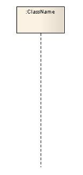
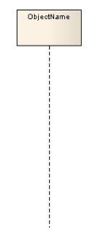
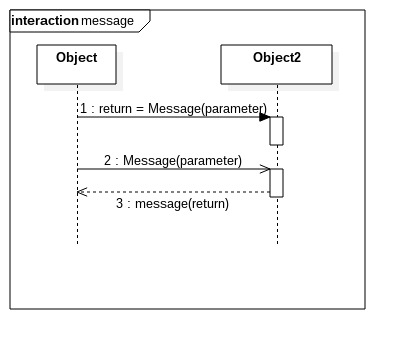

UML序列图学习笔记
注：本文总结自：UML 基础: 序列图，英文原文：The sequence diagram, 本文会有针对自己理解的一些编撰。
序列图主要用于按照交互发生的一系列顺序，显示对象之间的这些交互。很象类图，列图在记录一个未来系统的行为应该如何表现中，非常有用。在设计阶段，架构师和开发者能使用图，挖掘出系统对象间的交互，这样充实整个系统设计。
序列图的主要用途之一，是把用例表达的需求，转化为进一步、更加正式层次的精细表达。用例常常被细化为一个或者更多的序列图。序列图除了在设计新系统方面的用途外，它们还能用来记录一个存在系统（称它为“遗产”）的对象现在如何交互。
下面就来一一了解下组成序列图的相关元素。
符号原件
框架
框架元件用于作为许多其他的图元件的一个基础。可以作为图的图形化边界，为图的标签提供一致的位置。
除了作为图的图形化边界以外，也有描述交互的重要的功能, 例如序列图，在序列图上一个序列接收和发送消息（又称交互），能通过连接消息和框架元件边界，建立模型。如下图：
当使用一个框架元件封闭一个图时，图的标签需要按照以下的格式:
图类型 图名称
基础
序列图的主要目的是定义事件序列，产生一些希望的输出。重点不是消息本身，而是消息产生的顺序；不过，大多数序列图会表示一个系统的对象之间传递的什么消息，以及它们发生的顺序。图按照水平和垂直的维度传递信息：垂直维度从上而下表示消息/调用发生的时间序列，而且水平维度从左到右表示消息发送到的对象实例。
生命线
生命线表示序列中，建模的角色或对象实例,如下图所示：
UML 的生命线命名标准按照如下格式:
实体名 : 类名
在上面的例子中，生命线表示类student的实体，实体名称是freshman（生命线名称带下划线）。当使用下划线时，意味着序列图中的生命线代表一个类的特定实体，不是特定种类的实体（例如，角色）,序列图的实例名称有下划线，而角色名称没有。
一个生命线不仅仅用来代表一个特定实体，也能用来表现一个匿名的或未命名的实体。当在一个序列图上，对一个未命名的实例建模时，生命线的命名采用和一个命名实例相同的命名方式，但是生命线实体名的位置留下空白，而不是提供一个实体的名字。如下图所示：

同时，也可以只使用对象名来代表这个特定的实例。

消息
为了可读性，序列图的第一个消息总是从顶端开始，并且一般位于图的左边。然后继发的消息加入图中，稍微比前面的消息低些。 消息一般分为同步消息（Synchronous Message），异步消息（Asynchronous Message）和返回消息（Return Message）.如下图所示：

同步消息=调用消息（Synchronous Message）
消息的发送者把控制传递给消息的接收者，然后停止活动，等待消息的接收者放弃或者返回控制。用来表示同步的意义。异步消息（Asynchronous Message）
消息发送者通过消息把信号传递给消息的接收者，然后继续自己的活动，不等待接受者返回消息或者控制。异步消息的接收者和发送者是并发工作的。返回消息（Return Message）
返回消息表示从过程调用返回自关联消息（Self-Message）
表示方法的自身调用以及一个对象内的一个方法调用另外一个方法。